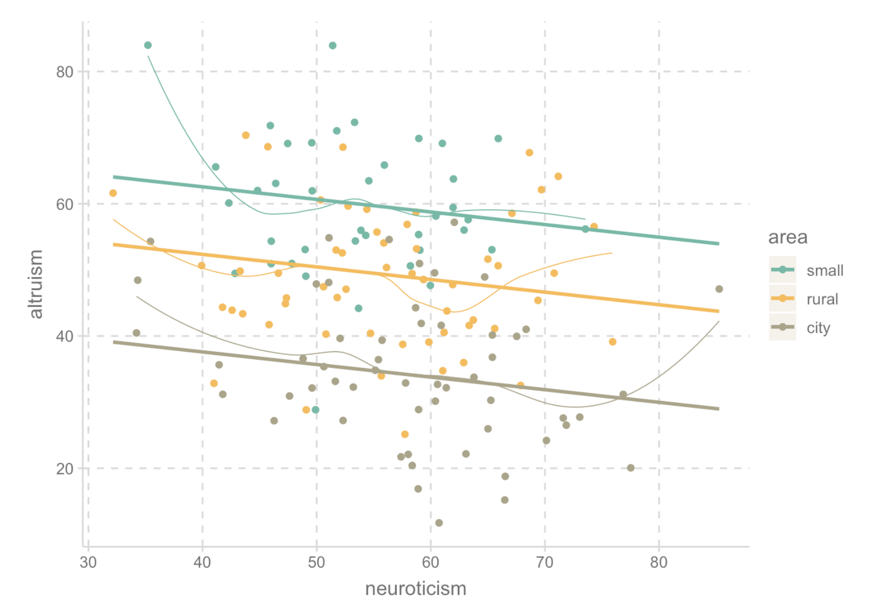
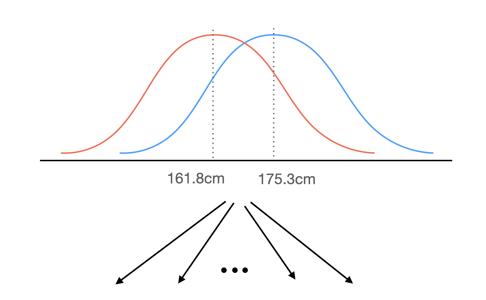
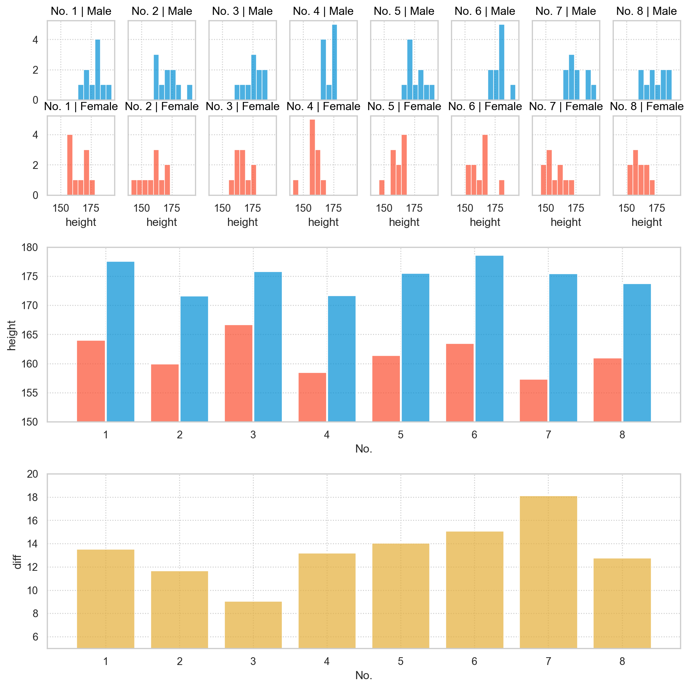
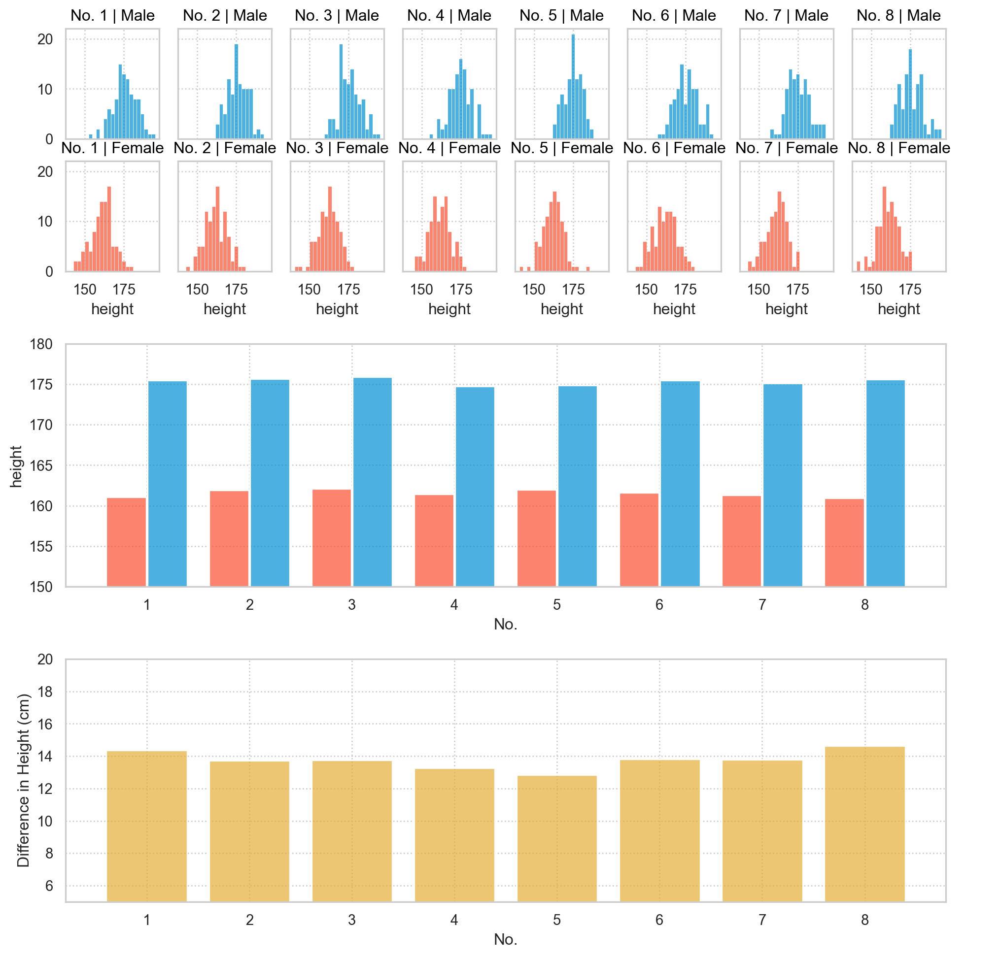
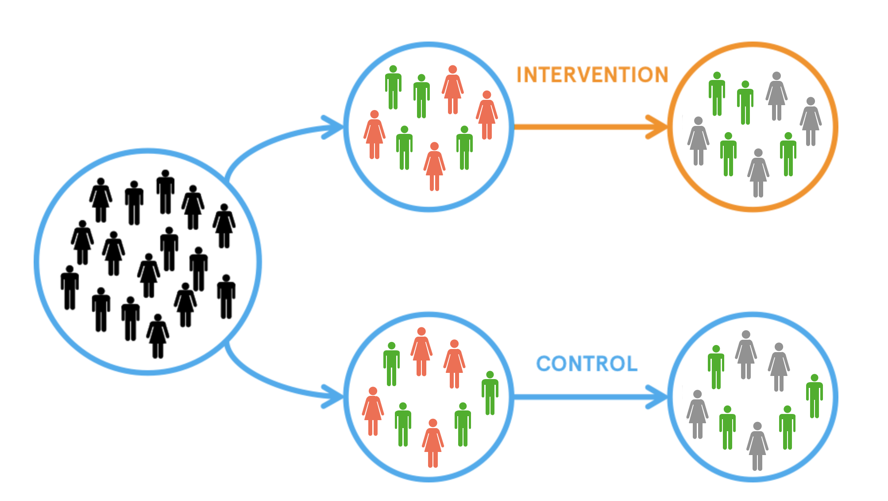
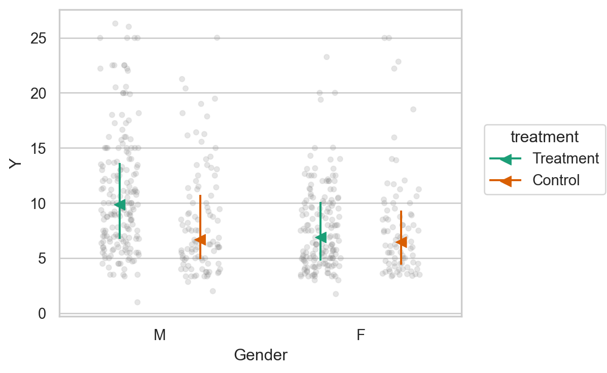
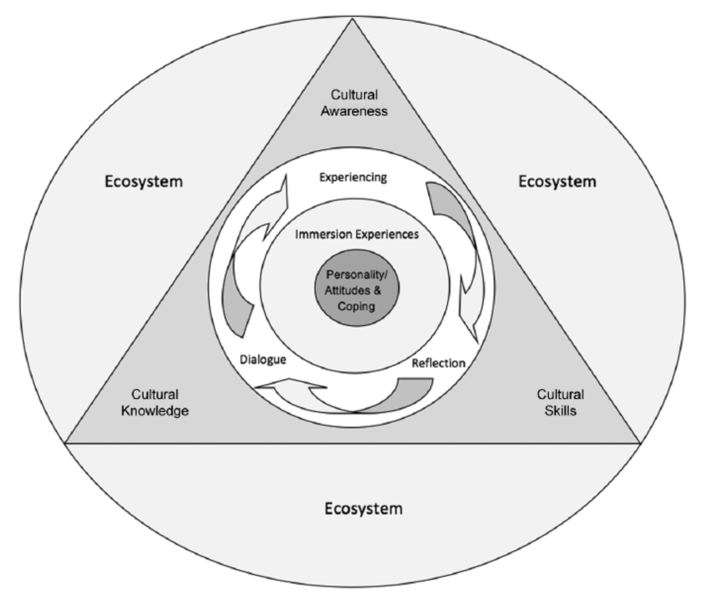

모집단 문제 (8장)
상담연구방법론, by Heppner, P. P., Wampold, B. E., Owen, J., Thopso, M. N.
연구 결과가 다른 맥락에 얼마나 적용 가능할 것인가에 대한 물음
예를 들어,
- 치료에 관한 연구 결과가 정신건강 기관(mental health agencies)에서 볼 수 있는 유형의 환자들에게 적용 가능한가?
- 결혼 만족도에 관한 연구가 다양한 민족이나 인종에게도 타당한 정보를 제공하는가?
- 어떤 연구에 대학생 표본을 사용하는 것이 적절한가?
모집단의 문제가 연구 설계와 해석에 어떻게 악영향을 주는지에 대해 살펴봄
표본추출이론 (Sampling Theory)
논리적으로 표현하면,
- 연구자가 관심 있는 전체 집단을 모집단(population)이라고 보고,
- 그 모집단에서 일부를 추출한 것을 표본(sample)으로 봄.
예를 들어, 전국의 모든 대학생에 대해 관심이 있다면,
- 전국의 모든 대학생을 모집단으로 보고,
- 그 중 일부를 추출한 대상을 표본으로 봄.
“편향(bias)”되지 않는 표본을 추출하는 것이 핵심임!
앞의 예에서 편향되지 않은 표본을 추출하기 위해서는(표본의 크기 100), 모든 대학생들이 동일한 확률로 표본에 포함될 수 있도록 장치를 마련해야 함.
- 예를 들어, 전국 모든 대학생들의 명단을 확보한 후, 무작위로 100명을 선택하여, 연락 후 표본을 구해야 함: “무작위 추출(random sampling)”
- 만약, 참여의사가 없는 학생을 제외한다면 편향이 생길 수 있음.
- 응용연구에서 대부분 불가능한 조건임.
- 특히, 상담연구에서는 어떤 지역에서 내담자를 선택할 정도만 되어도 운이 좋은 편임.
- 대부분, 참여의사의 여부에 따르므로, 참여의사가 없는 대상들이 어떤 특징을 가질 수 있으므로 추론에 편향을 줄 수 있음.
따라서, 현실적으로는
- 구할 수 있는 표본이 관심이 있는 모집단을 얼마나 잘 대표할 수 있는가를 고민하거나,
- 반대로, 표본으로부터 모집단을 어느 정도로 확대, 일반화 할 수 있는가를 추정해야 함.
- 예. 성소수자에 대한 연구를 하는데, 관찰할 수 있는 표본이 얼마나 성소수자를 대표할 수 있는가?
- 반면, 성소수자 안에서도 구별될 수 있는 그룹이 존재할 수 있는가? 그렇다면, 관측값에 포함하여 비교하는 탐색적 과정이 필요함.
- 표본의 크기가 클수록 다양한 대상을 포함하기 때문에 대표성은 높아진다고 볼 수 있음.
참여자 선택에 관한 실제적인 고려사항
목표 모집단 정의하기
- 모집단은 엄밀히는 관찰의 대상이 아니라 관찰값을 의미함.
- 예를 들어, 설문을 한 대학생이 모집단이 아니고 그 대학생들으로부터 관측된 설문의 값(측정치)이 모집단임.
- 하지만, 일반적으로 사람의 특성에 의해 정의됨
- 예를 들어, 진단적 범주, 성별, 민족, 나이, 성적 지향, 출신 지역, 종교, 결혼 상태, 사회경제적 지위
- 연구 주제에 영향을 미칠 수 있는 특성에 대해서 고려해야 함.
모집단의 이질성 vs. 동질성
- 모집단이 이질적일수록 일반화할 수 있는 범위가 넓어짐.
- 예를 들어, 모집단을 학부생으로 제한하여 연구한다면 무직 노동자와 다른 집단의 우울증에 대해서도 그 효능이 있는지는 알 수 없음.
- 하지만, 이질적인 대상들일 수록 대상들의 반응에는 변동성이 높아지고, 관측값들의 노이즈 혹은 오차 변량(error variance)가 커지게 되어 보고 싶은 관계가 덜 분명하게 나타남.
- 예를 들어, 지역에 따른 차이가 존재할 때, 노이즈가 많아지나 이를 통제적으로 노이즈를 제거하여 관계를 분명히 할 수 있는 방법이 있음.

- 처음부터 도시 거주민들만으로 제한하면 (동질적인 모집단) 관계는 분명해지나, 일반화할 수 있는 범위가 좁아짐.
- 다양한 지역의 거주민들을 포함하면 (이질적인 모집단) 관계는 분명하지 않아지나 (통계적 보정으로 어느 정도 해결 가능), 일반화할 수 있는 범위가 넓어짐.
미국의 대규모 심리치료 연구들도 종종 그 대상이 백인, 중산층 표본에 근거하고 있음.
- 다양한 집단에 대해서도 적용될지는 의문
- 특히 건강 불평등의 차별적 문제에 대해 상담심리학자들이 관심이 요구됨.
참여자 풀 만들기
모집단이 정의되면, 이 1) 정의에 부합하고 2) 구할 수 있는 사람들을 찾아야 함.
이 사람들을 참여자 풀(participant pool)이라고 함.
- 예를 들어, 목표 모집단이 대학 상담 센터의 내담자라면,
- 참여자 풀은 종종 연구자 주변에서 구할 수 있는 참여자들로 제한됨.
- 보통 이처럼 모집단을 대표하기 어려운 편향적인 참여자 풀로 구성됨.
따라서, 이러한 제약이 연구 결과에 영향을 미치지 않는다는 증거를 제시해야 함; 배경지식과 선행 연구를 바탕으로
- 예를 들어, “신체적 스트레스에 대한 생리적 반응”에 대한 연구 vs. “낙태에 대한 태도” 연구
- 전자는 지역에 따른 차이가 존재하지 않을 것이라고 예상할 수 있느나 후자는 큰 차이를 보일 것이라고 예상할 수 있음.
따라서 연구들이 반복적으로 특정 집단 특히, 소외된 집단을 배제되지 않도록 노력해야 함.
자발적 참여자의 특징
- 참여자 풀은 사실 자발적 참여자들을 대상으로 하고 있다는 점에도 모두 편향성을 지님.
- 높은 교육 수준, 사회적 인정에 대한 욕구, 지적이고, 덜 권위적이며, 적응을 잘하고, 자극을 추구하는 경향이 있음.
끝으로, 모집단의 정의에 맞는지를 검증하는 절차가 요구됨
- 예를 들어, 우울한 학생에 대한 연구에서 적어도 경증의 우울증을 가진 사람을 선별하기 위해 250명 이상의 학생들에게 벡 우울 질문지 검사를 수행
참여자 선택하기
참여자 풀에서 실제 참여자를 결정
- 이상적으로는 참여자 풀에서 “무작위”로 선택
- 현실적으로는 참여 가능한 참여자들로 구성됨
- 예를 들어, 센터에 방문했던 모든 내담자를 연구에 참여하도록 요청
- 접수 면접에 온 520명 중 424명이 참여에 동의함.
- 이들은 접수 면접 전에 시행된 설문조사에 응답하였으나,
- 83명만이 사례가 종료된 후에도 설문조사에 응답함.
타당도 확립하기
무작위 선택이 불가능한 경우도 연구의 목적을 달성하는데 “충분”하다고 볼 수 있는 근거를 마련할 수 있음.
- 예를 들어, 직업 유형에 관한 이론은 개인의 경력 선택과 만족감이 그들의 성격 유형과 관련이 있다고 주장함.
- 이 때는, “다양한 전공”을 가진 학부생을 대상으로 참여자를 선택하는 것은 적절함.
- 반대로, 직업개발이론은 다양한 생애 단계와 진로 개발 과제를 연결하는데,
- 이 때는, 대학생 표본을 선택하는 것은 부적절함.
- 또한, 동성애 혐오 피해에 관한 연구에서, 미국의 청소년을 대상으로 했는데,
- 이는 중서부 지역의 백인 피해 청소년들의 심리사회적, 교육적 발달에 영향을 미친다는 결과는 보여주기에 충분함.
따라서, 이상적인 표본을 선택할 수 없는 상황에서,
참여자들의 특성을 파악하여 적절한 가설의 모집단으로 일반화 할 수 있음을 보이도록 노력이 요구됨!
특히, 범주적 상태에 따라 나뉘는 집단의 차이에 대해 일반화하는데 주의가 필요함.
- 예를 들어, 우울에 대한 종교 기반 행동 활성화 게임의 효능을 검증하는데, 50명 중 47명이 기독교인이었음.
- 종교 일반에 대한 일반화가 가능하려면, 인구에 포함된 종교의 비율과 동일한 비율의 표본이 이상적임.
- 하지만, 적어도 이 연구는 기독교인에게는 효과가 있다는 것을 보여줌.
- 후속연구에서 다른 종교인에 대한 효과를 검증하는 연구를 통해 보충할 수 있음.
- 두 인종, 백인과 흑인 청소년 간의 학업 성취도, 스트레스, 불안감을 비교했을 때,
- 두 집단 간의 차이는 인종의 문제로 귀결(귀인)될 수 없음!!!
- 이런 성격의 집단 간의 비교는 무선 할당과 같은 실험적 연구로 수행될 수 없다는 점은 인과문제를 복잡하게 만듦.
- 예를 들어, 두 집단은 사회경제적 지위, 가족 상태, 부모의 개입과 감독 정도, 지역사회의 범죄율 등의 요인들이 다를 수 있음: covariates
- 만약, 흑인들의 가난이 학업 성취도에 부정적으로 영향을 줬다면, 이는 가난의 차이로 인한 집단 간 차이임.
- 이는 인종을 제외하고는 모든 다른 상태가 동일할 때에만 인종의 문제로 귀결할 수 있음.
- 따라서, 그 요인을 모른다면, 위 연구는 일반화(외적 타당도)에도 제한이 될 수 밖에 없음; 예) 흑인이 부유한 지역에서는?
따라서, 표본의 특성을 최대한 파악하고, 결과의 해석에서 여지를 줄이도록 노력해야 함!
- 무수히 많은 특성이 존재하기는 하지만 연구 결과에 영향을 미칠 수 있는 특성들을 파악하도록 노력
- 기본적으로 연령, 교육 수준, 사회경제적 지위, 성별, 이민자의 경우 언어 및 문화 동화 정도, 인종 정체성 발달 정도, 지리적 위치 등을 파악
- 표본에 반드시 여성과 소수 인종/민족을 포함하도록 권고
- 인종 소수자 및 경제적 불이익을 받는 집단에 대한 표본을 얻는 것이 어려우나, 이들에 대한 연구가 필요함. (지침서는 교재 참고)
대부분의 심리학 연구가 세계 인구의 5%만을 차지하는 미국인을 표본으로 하고 있다는 점은 일반화에 대한 의구심을 충분히 제기할 수 있음.
세계의 다양한 집단에 대한 비교 연구에 대한 지침들이 제시되고 있음. (교재 참고)
참여자 수 결정하기
- 표본 데이터로부터 얻은 효과가 모집단에서도 그대로 유효할지에 대해 확신(확률)을 높이려면 “표본의 크기”가 클수록 유리함.
- 또한, 그 “효과”가 진실로 크다면, 표본의 크기가 작아도 높은 확신(확률)을 가질 수 있음.
- 즉, 모집단에서도 효과가 존재한다고 추론하려면(효과가 없다는 가정을 기각하려면), 원래 효과가 크거나 수집한 표본이 크거나 이 둘의 조합이 중요한 요소임.
- 효과가 아무리 미미해도 표본의 크기가 충분히 커지면 “효과가 없다는 가정”을 기각할 수 있음. 즉, 통계적으로 “유의(significant)”해짐.
- 그 외의 여러 요소가 있음: 모형의 복잡성, 통계적 모형의 특성, 변수들 간의 공변성 등등
- 사실, “효과”를 정의하는 것도 쉽지 않음.



만약, 연구 결과에서 나올 효과의 크기를 가늠할 수 있다면, 최소한의 표본의 크기를 대략 정할 수 있음.
- 선행 연구로부터 추론하는 방법
- 실질적/임상적 중요성을 가진다고 여겨지는 효과의 크기를 규정하는 방법
- 종종 제시되는 어림짐작(a rule of thumb)에 대한 방법은 조심히 사용할 것.
- 표본의 크기를 결정해주는 프로그램이 있음.
외적 타당도와 모집단 문제
사람 변수(person variable)의 범주에 따라 다른 효과가 나타나는지는 흥미로운 관심사이며,
상담 분야에서 관심사가 높아짐.
- 성별, 인종, 민족성
- 성적 지향, 국적, 종교, 사회적 지위, 장애 여부 등
예를 들어, 처치의 효과가 남성에게만 나타난다면, 모집단(사람/남성/여성?)에 대해 어떻게 기술할 것인가?


- 위와 같은 효과가 있을 때, 이를 통계에서 “상호작용 효과”라고 함.
- 성별과 처지가 상호작용하여 효과를 나타낸다는 것을 의미함.
- 성별을 조절변수(moderator)라고도 부름.
예를 들어, 상담사들의 국가 간 문화 역량(Cross-National Cultural Competence: CNCC)에 관한 모형에서,
- personality/attitudinal/coping variables;
- immersion experiences;
- cognitive and affect processing of cultural encounters;
- cross-cultural knowledge, awareness, and skills;
- the larger ecosystem (cultural context) surrounding the individual.

Heppner, P. P., & Wang, K. T. (2014). A cross-cultural immersion program: Promoting students’ cultural journeys. The Counseling Psychologist, 42(8), 1159-1187.
개입의 효과를 연구할 때, 개인 및 환경 요인을 고려하는 것이 중요함.
- 예를 들어, 문화 역량을 증진시키는 프로그램에서 인종/민족성에 따라 다른 효과가 나타났음. (상호작용)
- 낮은 수준의 훈련을 받은 경우, 소수 인종 훈련생이 백인 훈련생에 비해 유의하게 높은 다문화 인식을 보였음.
- 높은 수준의 훈련을 받은 경우, 소수 인종과 백인 훈련생 간의 유의한 차이가 없었음.
다른 모집단으로의 일반화 가능성을 조사하는데 고려할 점들
1. 모집단의 특성을 규정하는 무수한 변수들 중 어떤 것을 선택할 것인가?
무수한 조사되지 않은 person, setting, time(generation/cohort) 변수들 중 어느 것이 상호작용적으로 효과에 영향을 줄 지 알 수 없으며, 무엇을 선택해야 하는지는 매우 어려운 일임.
- 성별, 민족, 성적 지향, 사회경제적 지위, 인종, 나이, 장애 정도, 지능, 성격 유형, 진료소의 유형 등
- 각 분야의 지식이나 상식에 입각해 영향의 유무를 결정하고 연구에 포함할 것.
이런 객관적으로 보이는 변수들에 대한 정의와 구성개념(construct)에 좀 더 주의를 기울일 필요가 있음.
- 예를 들어, 인종(race)의 개념은 여전히 모호하며 논쟁의 여지가 있음.
- 성별의 개념은 다소 더 명확한 반면, 그 구성개념이 실질적으로 더 중요할 수 있음.
- 생물학적 성별보다는 “성 역할 지향”이 더 중요할 수 있음.
- 민족에 대해서도 “문화에 동화된 정도(acculturation)”나 “민족 정체성(ethnic identity)”이 더 중요할 수 있음.
상담 영역에서 이런 요인들이 행동이나 연구에 미치는 영향을 연구하는 것이 중요함.
- 예를 들어, 양육 방식과 가족 관계가 문화에 따라 상이할 수 있으며, 심리적 안녕감에 다른 효과를 미칠 수 있음.
- 이는 구체적인 인종(예, 흑인)이 지니는 특성한 구성개념을 이해하는 연구는 단순히 인종 간 차이를 비교하는 연구와는 전혀 다름.
2. 집단 간 차이에 내재하는 과정을 이해하는 것의 중요성
예전부터 단순한 집단 간 비교는 유용성이 제한되며, 편견을 양산할 수 있음이 지적되어 왔음.
- 흑인과 백인 청소년 간의 불안감, 학업 성취도 등
- 인종/성별 간 지능 비교
집단 간 차이를 발생시키는 이유를 이해하는 것이 연구의 목적:
집단 내부의 어떠한 차이가 그 집단 간 차이를 발생시키지 대한 심리적 과정을 이해하는 것이 중요함.
예를 들어, 구성개념 “반사회적 행동”에서 두 집단 A, B가 차이(A > B)가 난다고 하면,
- 반사회적 행동으로 이끄는 요인들이 두 집단에서 동일하게 작동하고 있는가?
- 만약, 부적절한 부모 감독이 반사회적 행동의 중요한 “인과적 구성개념”임이 밝혀져 있다면,
- A 집단에서 반사회성이 높은 이유가 부적절할 부모 감독 때문인지, A 집단에만 영향을 주는 다른 요인이 있는지를 탐구해야 함.
- 실제로, 인종 간에 발달 과정(developmental processes)이 다르지 않다는 증거를 제시했고, 인종 간 보이는 성취도나 비행 행동의 차이는 발달 과정에서 다른 pathway를 거치게 만드는 요인들 때문임을 시사함. (Rowe, Vazsonyi, and Flannery (1994))
- 즉, 인종의 고유한 차이라기 보다는 그 이면의 과정으로부터 비롯된 차이임.
또 다른 예로는, 직업적 흥미에 관한 모형에서 여러 문화간에 흥미와 그 구조의 유사성을 발견하였는데,
- 후속 연구에서 문화적 차이가 왜 발생할 수 있는지에 대한 요인들을 살펴봄.
또한, 상담자와 내담자 간에 회기에 대한 평가가 다르다는 것을 발견하였는데,
- 이 두 그룹 간에 평가에 영향을 주는 다른 요인이 존재할 수 있음을 밝힘.
- 모두에게 환자의 참여도와 호전된 정도가 평가와 정적인 관계를 가졌으나,
- 내담자의 경우, 상담자에 대한 “interpersonal style” & “real relationship”이 정적인 예측 요인으로,
- 상담자의 경우, “expertness”가 정적인 예측 요인으로, “real relationship”이 부적인 예측 요인으로 밝혀짐.
3. 표본에서 다양한 집단들의 구성 비율
- 상정한 모집단으로 일반화하기 위해서는 표본에서도 그 모집단과 유사한 비율로 집단들이 포함되어야 함.
- 예를 들어, 남녀의 경우 대략 동일한 비율로 표집되어야 함.
- 미국에서 백인과 미국 인디언의 수는 미국 전체를 대표할 수 있도록 비율을 정해야 함.
- 하지만, 그룹 간의 차이를 비교하는 연구라면 동일한 비율로 표집하는 것이 바람직.
- 종교에 따른 차이를 보려면, 각 종교별 동일한 수의 참여자를 포함하는 것이 통계적으로 유리함.
4. 다양한 계층의 사람들을 포함하는 것의 함의
- 보통 연구들은 우세한 표본을 대상으로 함.
- 소수의 표본을 포함하고 비교하더라도, 다수를 기준으로 소수가 어떻게 대조되는지에 초점.
- 각 집단은 동질적이라는 가정을 하고 있음.
- 흑인의 경우에도 여러 다양한 집단이 존재함.
- 문화 동화 정도(accuturation), 인종/민족 정체성, 세대 상태(generational status) 등
- 이러한 다양성을 고려하는 것이 중요함.
- 집단 간 비교보다는 그 집단 문화 특수적 현상을 탐구할 필요가 있음
- 예를 들어, 소수 인종들이 정신건강 클리닉을 충분히 이용하지 않는데, 이는 인종 내 과정을 탐구해 이해할 필요가 있음.
- 예를 들어, 상담에 대한 태도, 차별에 대한 인식, 낙인, 접근성 등
5. 다양한 연구를 통한 외적 타당도의 확보
체계적 반복검증: 단일 요소를 달리하여 실험을 반복
- 집단 연구에 적용해보면, 예를 들어, 남성 참여자들만/여성 참여차들만의 집단으로 연구
- 독립된 연구이기 때문에, 두 집단 간 차이는 성별에 따른 차이가 아닌 다른 요인들에 기인할 여지가 있음.
- 또한 상호작용의 효과 크기도 추정하기 어려움.
9장 다양성 관점: 개념적, 방법론적 고려 참고